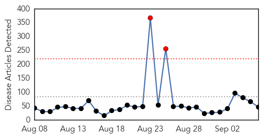
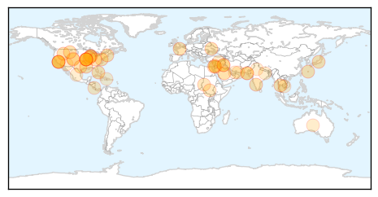

Mold/Fungal
30-Day Web Trend
0 alerts, 0 warnings

30-Day Twitter Trend
0 alerts, 0 warnings

Article Locations

Article Confidences

Top Articles:
-
No articles found for Sep 06, 2014
Top Tweets:
-
No tweets found for Sep 06, 2014
Unknown
30-Day Web Trend
2 alerts, 0 warnings

30-Day Twitter Trend
0 alerts, 0 warnings

Article Locations
Article Confidences

Top Articles:
- 0.967
- Mystery Respiratory Virus Sickening Kids in Colorado
- 0.966
- Filipino nurse thought to have MERS virus did not
- 0.966
- Enterovirus D-68 (HEV-D68) Update
- 0.934
- New Respiratory Virus Affecting Children across Several States - Dumb Out
- 0.934
- Unknown Virus Makes Hospitals Off Limits for Children
- 0.917
- Illinois hospital bars children visits due to mystery virus
- 0.917
- Chicago Tribune
- 0.917
- Chicago Tribune
- 0.917
- Chicago Tribune
- 0.917
- Chicago Tribune
- 0.917
- Chicago Tribune
- 0.917
- Chicago Tribune
- 0.917
- Chicago Tribune
- 0.917
- Chicago Tribune
- 0.917
- Chicago Tribune
- 0.917
- Chicago Tribune
- 0.917
- Chicago Tribune
- 0.917
- Chicago Tribune
- 0.917
- Chicago Tribune
- 0.917
- Chicago Tribune
- 0.917
- Chicago Tribune
- 0.917
- Chicago Tribune
- 0.917
- Chicago Tribune
- 0.917
- Chicago Tribune
- 0.910
- The world windows to Thailand
- 0.887
- Illinois hospital asks children not to visit due to unknown virus
- 0.884
- Lung virus hospitalizing hundreds of kids across Midwest
- 0.883
- Illinois hospital asks children not to visit due to unknown virus
- 0.830
- Illinois Hospital Stops Children From Entering As Unknown 'Enterovirus' Virus Affects Children
- 0.780
- Water drought, flooding hits Central and North Darfur camps - Sudan
- 0.761
- Naegleria fowleri: Death toll reaches 10 as brain-eating amoeba claims another life
- 0.748
- Cry for help as lethal virus ravages maize - News
- 0.719
- Our Kidneys
- 0.685
- Karachi teen dies of suspected Naegleria fowleri, if confirmed it will be 10th fatality
- 0.630
- Colorado children's hospitals see spike in severe respiratory illness
- 0.624
- Epidemics outbreak: Doctors face crisis
- 0.612
- Dr. Elizabeth Calhoun Appointed Executive Director of the New Center for Population Science and Discovery at the Arizona Health Sciences Center
- 0.603
- Syrian airstrikes on IS militants kill dozens in Raqqa
- 0.601
- Brussels suspect was Syria jihadist, ex-hostage says
- 0.601
- Ceasefire holds in Ukraine amid doubts over lasting peace
- 0.601
- Foreign plant viruses sneak in on imported garlic
- 0.594
- Fear of epidemics in Valley
- 0.581
- Djokovic suffers shock loss to Nishikori at US Open
- 0.577
- Health : Impressive results for the Ministry of Health
- 0.561
- TB fight, via email
- 0.558
- Malaria resistance lurks on Thai-Cambodia border
- 0.547
- For Some, Tourism Now Includes Surgery
Top Tweets:
-
No tweets found for Sep 06, 2014